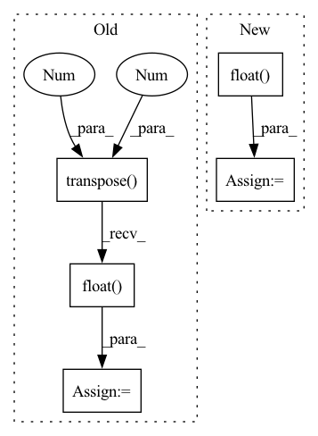

Pattern ID :12911

Before Change
img = letterbox(img, new_shape=imgsz)[0]
//print(img.shape[:2])
img = img.transpose(2, 0, 1)
img = torch.from_numpy(img).to(self.device)
img = img.float() // uint8 to fp16/32
img /= 255.0 // 0 - 255 to 0.0 - 1.0
if img.ndimension() == 3:
img = img.unsqueeze(0)
return img
After Change
pp_imgs = np.array(pp_imgs)
pp_imgs = pp_imgs.transpose(0, 3, 1, 2)
pp_imgs = torch.from_numpy(pp_imgs).to(self.device)
pp_imgs = pp_imgs.float() // uint8 to fp16/32
pp_imgs /= 255.0 // 0 - 255 to 0.0 - 1.0
return pp_imgs
def _postprocess(self, imgs, origimgs, pred, conf_thres, iou_thres):
In pattern: SUPERPATTERN
Frequency: 3
Non-data size: 5
Instances
Fragment ID: 43589465
Project Name: elyha7/yoloface
Commit Name: 794e25df420f25fd7937e0af41fefd7bf184fad6
Time: 2022-01-10
Author: artemrebrikov@gmail.com
File Name: face_detector.py
M Class Name: YoloDetector
N Class Name: YoloDetector
M Method Name: _preprocess(2)
N Method Name: _preprocess(2)
M Parent Class:
N Parent Class:
M File Name: face_detector.py
N File Name: face_detector.py
M Start Line: 67
M End Line: 83
N Start Line: 66
N End Line: 82
'>
Before Change
cumulative_loss.append(0)
for data in dataloader:
data = Variable(data.transpose(0,1)).float()
out = self.wf(data)
t0 = time.time()
self.wf = self.wf.eval()
After Change
print("\n data ", data.shape)
data = Variable(data).float()
t0 = time.time()
out = self.wf(data)
print("\t WF done in %f" %(time.time()-t0))
'>
Fragment ID: 43589370
Project Name: nlesc-jcer/qmctorch
Commit Name: 3dd6974f914a3d22ee620c2359808489d7f573a0
Time: 2019-05-13
Author: nicolas.gm.renaud@gmail.com
File Name: pyCHAMP/solver/neural_net.py
M Class Name: NN4PYSCF
N Class Name: NN4PYSCF
M Method Name: train(2)
N Method Name: train(2)
M Parent Class: SOLVER_BASE
N Parent Class: SOLVER_BASE
M File Name: pyCHAMP/solver/neural_net.py
N File Name: pyCHAMP/solver/neural_net.py
M Start Line: 111
M End Line: 138
N Start Line: 117
N End Line: 136
'>
Before Change
heatmap: np.ndarray = cmap(heatmap) // (N, H, W, C) TODO: linting problem
else: // cmap: [256, 3|4] uint8
assert isinstance(cmap, torch.Tensor) and cmap.shape[0] == 256
heatmap = cmap[(heatmap * 255).long()].transpose(1, 3).transpose(2, 3)
heatmap = heatmap.float() / 255
// Note that C==4 for most cmaps
heatmap = torch.as_tensor(heatmap.transpose(0, 3, 1, 2)) // (N, C, H, W)
return heatmap[0] if squeeze_flag else heatmap
After Change
cmap = torch.as_tensor(cmap)
assert cmap.shape[0] == 256 // cmap: [256, 3|4]
heatmap = cmap[(heatmap * 255).long()] // (N, H, W, C) uint8
heatmap = heatmap.transpose(1, 3).transpose(2, 3).float() // (N, C, H, W)
heatmap = heatmap / 255 if heatmap.max() > 1 else heatmap // (N, C, H, W) float
return heatmap[0] if squeeze_flag else heatmap
'>
Fragment ID: 43589407
Project Name: ain-soph/trojanzoo
Commit Name: 80e74988c8d77c00322fd1144f83d6ff4e5ee2cb
Time: 2020-12-31
Author: ain-soph@live.com
File Name: trojanvision/utils/__init__.py
M Class Name: AnonimousClass
N Class Name: AnonimousClass
M Method Name: apply_cmap(2)
N Method Name: apply_cmap(2)
M Parent Class:
N Parent Class:
M File Name: trojanvision/utils/__init__.py
N File Name: trojanvision/utils/__init__.py
M Start Line: 14
M End Line: 27
N Start Line: 15
N End Line: 29